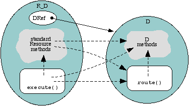

Destiny
C++ | Overview | Reference
Class and Object Design | R_D | rsl2D | Sorting
R_D is a Foundation 2.5 Resource whose job it is to represent D objects in Foundation. The D system knows nothing whatsoever of Granite Foundation, Resources, or RSL, but shares similar design goals although from a pure C++ perspective. Instances of R_D bridge the remaining gap. There is no similar D object.
Object mapping: RtoD() and DtoR()
R_D contains a DRef instance variable (referred
to hereafter as dref) and implements the standard Resource methods to construct
DMessage objects (a DR_Message pointing to a DO_Message object, that is) which is
sent via route() to dref. In many cases, R_D has to map or convert between
Foundation Resources and D objects; it does this via the methods RtoD()
and DtoR(), documented below. It kind of looks like the diagram
below, dotted arrows indicating function calls, and the solid arrow is a pointer:

Interface mapping: native RSL classes and res_class
Beyond method mapping, the real complexity is how does RSL know in the first place
that an R_D points to a specific kind of D. R_D's job is to take on the characteristics
of the specific kind of D that it points to, and the way that RSL determines the
interface supported by an object is by its class, defined by its RSL class declaration.
This means that D objects, if they are to be useable from within RSL by any means
such as R_D, they must also describe their interface to RSL by declaring an RSL class,
much like CORBA and COM objects do with their respective versions of IDL. See the
Class Mapping section below for more details.
Below is the approximate mapping between Resource methods and D methods. dref (all lowercase) is R_D's DRef instance variable.
| Standard Resource method | what R_D implements |
execute() |
route() see below |
LogicalValue() |
dref.isValid() |
StrValue() |
dref.toString() |
Assign() |
dref.assign() |
Clear() |
dref.dump() |
IsEqual(Resource *R) |
dref.compare(RtoD(R)) == c_equal |
print(ostream& out) |
out << dref.toString() |
this is the Resource method that is invoked when Resource methods are called from
RSL. R_D understands messages; for those it doesn't understand, it passes them on
to its DRef by constructing a DMessage and invoking dref.route().
R_D::execute() answers the following messages (as declared in RSL):
String/( ) ;RSL member access operator. invokes dref.route() with a DMessage object with "/" as the message name, and the argument named "objectName". This essentially maps between what is declared in Object.rsl and D.rsl.
BooleanisEqual( ) ;invokes R_D::IsEqual()
Boolean==( ) ;invokes R_D::IsEqual()
Objectassign( ) ;invokes R_D::Assign()
Object:=( ) ;invokes R_D::Assign()
ListlocalVarNames( ) ;not a pass through: returns the memberOf()->localVarNames() (which is
res_class::localVarNames())
R_D::RtoD(ResReference ref) maps or converts Resources to D objects.
Resource types are determined by the call to Resource::TypeID(), implemented
by all Resources. The following Resource types are converted:
R_DThis is the most desirable case: here, the Resource is actually an R_D so we can just return the D object it points to.
R_ListThis is the worst case; create a new DList (DO_List) and insert RtoD() for each element in the R_List.
R_IntegerA new DO_Int is returned that has the value of the R_Integer. See comments for R_String below.
R_BooleanA new DO_Bool is returned that has the value of the R_Boolean. See comments for R_String below.
R_StringR_String is itself a DRef object, and is actually implemented by a DO_String, thefore, its internal DO_String is returned. This is the way that R_Integer and R_Boolean should be implemented.
general RSL object
For instances of a pure RSL-defined class, a DO_Composite object is returned with RtoD() being called for each instance variable. Essentially this is the same as the R_List example, with the elements of the RSL object being stored in the DO_Composite's keyed collection storage, named as they are in the RSL object.
finally,
for those which are not listed above, is to create a new DString with the value of the Resource's StrValue() method.
DtoR() maps or converts D objects to Resources. This requires that the D object have an associated DClass object (DO_Class) returned by its Class() method. This is used to determine the type.
A new R_String wrapper is returned. Recall that R_String is itself implemented by DO_String, so this is not a data copy.
a new R_List is created, inserting the results of calls to DtoR() for each element in the DList.
a new R_Integer is returned with the value of the DO_Int
a new R_Boolean is returned with the value of the DO_Bool
general D object
All others (except null) get a new R_D object created, storing a DRef to the given D object. This R_D also points to the respective res_class instance created at startup time that describes the "native" RSL class declaration for the D object, if it is found.
null
If the DRef is actually null, that is, isValid() returns FALSE, an R_D is returned that points to null
(D* 0)and whose res_class is that of D. This means thatR_D::LogicalValue()will invokedref.isValid()which will return false to RSL.
Foundation represents these interfaces with the C++ class res_class. Each rsl
class declaration has a corresponding res_class object at runtime. Every D concept
(not class) has a corresponding RSL class declared to be a "native" class,
eg native class Collection { ... } is stored in the file Collection.rsl
and corresponds to the C++ D classes DR_Collection,
DO_Collection, etc. The way this correspondence is made is a bit too complex to be
documented right at this moment because today is my last work day before getting
married, so you'll have to look at examples.
Destiny C++ | Overview | Reference
Class and Object Design | R_D | rsl2D | Sorting